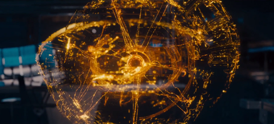

JARVIS
J.A.R.V.I.S. Just a Rather Very Intelligent System is a fictional character voiced by Paul Bettany in the Marvel Cinematic Universe (MCU) film franchise, based on the Marvel Comics characters Edwin Jarvis and H.O.M.E.R., respectively the household butler of the Stark family and another AI designed by Stark. J.A.R.V.I.S. is an artificial intelligence created by Tony Stark.
ULTRON
Ultron is a supervillain appearing in American comic books published by Marvel Comics. Created by writer Roy Thomas and artist John Buscema, the character first appeared as an unnamed character inThe Avengers , with his first full appearance in The Avengers
VISION

Vision, also known as sight, is the process by which the eyes, retinas, optic nerves, and brain work together to create the ability to see. It's a primary sense that allows individuals to perceive the world around them. Vision involves the conversion of light into electrical signals that are then interpreted by the brain.